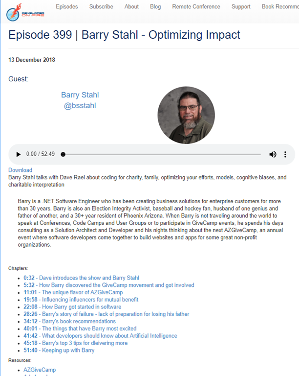
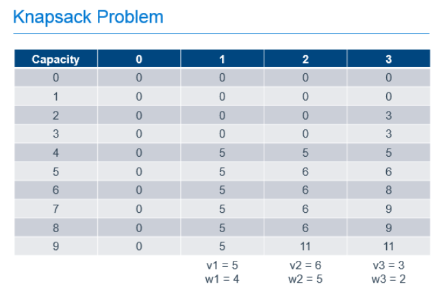
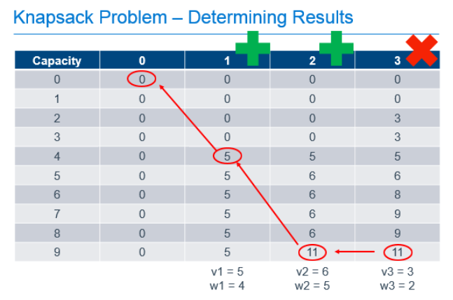

Tag: algorithms
Continuing a Conversation on LLMs
Posted by bsstahl on 2023-04-13 and Filed Under: tools
This post is the continuation of a conversation from Mastodon. The thread begins here.
I understand and share your concerns about biased training data in Large Language Models like GPT. Bias in these models exists and is a real problem, one I've written about in the past. That writing includes the fact that it is our responsibility as technologists to understand and work around these biases. I believe we agree in this area. I also suspect that we agree that the loud voices with something to sell are to be ignored, regardless of what they are selling. I hope we also agree that the opinions of these people should not bias our opinions in any direction. That is, just because they are saying it, doesn't make it true or false. They should be ignored, with no attention paid to them whatsoever regarding the truth of any general proposition.
Where we clearly disagree is this: all of these technologies can help create real value for ourselves and our users.
In some cases, like with crypto currencies, that value may never be realized because the scale that is needed to be successful with it is only available to those who have already proven their desire to fleece the rest of us, and because there is no reasonable way to tell the scammers from legit-minded individuals when new products are released. There is also no mechanism to prevent a takeover of such a system by those with malicious intent. This is unfortunate, but it is the state of our very broken system.
This is not the case with LLMs, and since we both understand that these models are just a very advanced version of autocomplete, we have at least part of the understanding needed to use them effectively. It seems however we disagree on what that fact (that it is an advanced autocomplete) means. It seems to me that LLMs produce derivative works in the same sense (not method) that our brains do. We, as humans, do not synthesize ideas from nothing, we build on our combined knowledge and experience, sometimes creating things heretofore unseen in that context, but always creating derivatives based on what came before.
Word2Vec uses a 60-dimensional vector store. GPT-4 appears to have something north of 1500 dimensions (I've heard differing numbers). I certainly cannot consciously think in that number of dimensions. It is plausible that my subconscious can, but that line of thinking leads to the the consideration of the nature of consciousness itself, which is not a topic I am capable of debating, and somewhat ancillary to the point, which is: these tools have value when used properly and we are the ones who can use them in valid and valuable ways.
The important thing is to not listen to the loud voices. Don't even listen to me. Look at the tools and decide for yourself where you find value, if any. I suggest starting with something relatively simple, and working from there. For example, I used Bing chat during the course of this conversation to help me figure out the right words to use. I typed in a natural-language description of the word I needed, which the LLM translated into a set of possible intents. Bing then used those intents to search the internet and return results. It then used GPT to summarize those results into a short, easy to digest answer along with reference links to the source materials. I find this valuable, I think you would too. Could I have done something similar with a thesaurus, sure. Would it have taken longer: probably. Would it have resulted in the same answer: maybe. It was valuable to me to be able to describe what I needed, and then fine-tune the results, sometimes playing-off of what was returned from the earlier requests. In that way, I would call the tool a force-multiplier.
Yesterday, I described a fairly complex set of things I care to read about when I read social media posts, then asked the model to evaluate a bunch of posts and tell me whether I might care about each of those posts or not. I threw a bunch of real posts at it, including many where I was trying to trick it (those that came up in typical searches but I didn't really care about, as well as the converse). It "understood" the context (probably due to the number of dimensions in the model and the relationships therein) and labeled every one correctly. I can now use an automated version of this prompt to filter the vast swaths of social media posts down to those I might care about. I could then also ask the model to give me a summary of those posts, and potentially try to synthesize new information from them. I would not make any decisions based on that summary or synthesis without first verifying the original source materials, and without reasoning on it myself, and I would not ever take any action that impacts human beings based on those results. Doing so would be using these tools outside of their sphere of capabilities. I can however use that summary to identify places for me to drill-in and continue my evaluation, and I believe, can use them in certain circumstances to derive new ideas. This is valuable to me.
So then, what should we build to leverage the capabilities of these tools to the benefit of our users, without harming other users or society? It is my opinion that, even if these tools only make it easier for us to allow our users to interact with our software in more natural ways, that is, in itself a win. These models represent a higher-level of abstraction to our programming. It is a more declarative mechanism for user interaction. With any increase in abstraction there always comes an increase in danger. As technologists it is our responsibility to understand those dangers to the best of our abilities and work accordingly. I believe we should not be dismissing tools just because they can be abused, and there is no doubt that some certainly will abuse them. We need to do what's right, and that may very well involve making sure these tools are used in ways that are for the benefit of the users, not their detriment.
Let me say it this way: If the only choices people have are to use tools created by those with questionable intent, or to not use these tools at all, many people will choose the easy path, the one that gives them some short-term value regardless of the societal impact. If we can create value for those people without malicious intent, then the users have a choice, and will often choose those things that don't harm society. It is up to us to make sure that choice exists.
I accept that you may disagree. You know that I, and all of our shared circle to the best of my knowledge, find your opinion thoughtful and valuable on many things. That doesn't mean we have to agree on everything. However, I hope that disagreement is based on far more than just the mistrust of screaming hyperbolists, and a misunderstanding of what it means to be a "overgrown autocomplete". To be clear here, it is possible that it is I who is misunderstanding this. Obviously, I don't believe that to be the case but it is always a possibility, especially since I am not an expert in the field. However, I think it would be worth your time, and a benefit to society, if people who care about the proper use of these tools, would consider how they could be used to society's benefit rather than allowing the only use to be by those who care only about extracting value from users.
Simple Linear Regression
Posted by bsstahl on 2023-02-13 and Filed Under: development
My high-school chemistry teacher, Mrs. J, had a name for that moment when she could see the lightbulb go on over your head. You know, that instant where realization hits and a concept sinks-in and becomes part of your consciousness. The moment that you truly "Grok" a principle. She called that an "aha experience".
One of my favorite "aha experiences" from my many years as a Software Engineer, is when I realized that the simplest neural network, a model with one input and one output, was simply modeling a line, and that training such a model, was just performing a linear regression. Mind. Blown.
In case you haven't had this particular epiphany yet, allow me to go into some detail. I also discuss this in my conference talk, A Developer's Introduction to Artificial Intelligences.
Use Case: Predict the Location of a Train
Let's use the example of predicting the location of a train. Because they are on rails, trains move in 1-dimensional space. We can get a good approximation of their movement, especially between stops, by assuming they travel at a consistent speed. As a result, we can make a reasonably accurate prediction of a train's distance from a particular point on the rail, using a linear equation.
If we have sensors reporting the location and time of detection of our train, spread-out across our fictional rail system, we might be able to build a graph of these reports that looks something like this:

I think it is clear that this data can be represented using a "best-fit line". Certainly there is some error in the model, perhaps due to sensor or reporting errors, or maybe just to normal variance of the data. However, there can be no doubt that the best fit for this data would be represented as a line. In fact, there are a number of tools that can make it very easy to generate such a line. But what does that line really represent? To be a "best-fit", the line needs to be drawn in such a way as to minimize the differences between the values found in the data and the values on the line. Thus, the total error between the values predicted by our best-fit line, and the actual values that we measured, is as small as we can possibly get it.
A Linear Neural Network
A simple neural network, one without any hidden layers, consists of one or more input nodes, connected with edges to one or more output nodes. Each of the edges has a weight and each output node has a bias. The values of the output nodes are calculated by summing the product of each input connected to it, along with its corresponding weight, and adding in the output node's bias. Let's see what our railroad model might look like using a simple neural network.

Ours is the simplest possible neural network, one input connected to one output, where our X value (time) is the input and the output Y is our prediction of the distance the train has traveled in that time. To make the best prediction we need to determine the values for the weight of the edge m and the bias of the output node b that produce the output that minimizes the errors in the model.
The process of finding the weights and biases values for a neural network that minimize the error is know as Training the model. Once these values are determined, we use the fact that we multiply the weight by the input (m * X) and add in the bias. This gives us an equation in the form:
Y = mX + b
You may recognize this as the slope-intercept form of the equation for a line, where the slope m represents the speed of the train, and the bias b represents the starting distance from the origin. Once our training process gives us values for m and b, we can easily plug-in any value for X and get a prediction for the location of our train.
Training a Model
Training an AI model is simply finding the set of parameters that minimize the difference between the predicted output and the actual output. This is key to understanding AI - it's all about minimizing the error. Error minimization is the exact same goal as we have when performing a linear regression, which makes sense since these regressions are predictive models on their own, they just aren't generally depicted as neural networks.
There are many ways to perform the error-minimization process. Many more complicated models are trained using an iterative optimization routine called Gradient Descent. Extremely simple models like this one often use a less complicated process such as Ordinary Least Squares. The goals are the same however, values for weights and biases in the model are found that minimize the error in the output, resulting in a model can make the desired predictions based on known inputs.
Regardless of the method used, the realization that training the simplest neural network results in a model of a line provided the "aha experience" I needed as the foundation for my understanding of Machine Learning models. I hope, by publishing this article, that others may also benefit from this recognition.
Developer on Fire
Posted by bsstahl on 2018-12-13 and Filed Under: general
I was recently interviewed by Dave Rael (@raelyard) for his Developer on Fire Podcast. I had a great time talking with Dave about a lot of different things, both professional and personal, and got to name-drop just a few of the many people who have been a part of my journey over the years.
I also took the opportunity to talk about a few things that have been on my mind:
I hope you enjoy this interview and find something of value in it. If so, please let me know about it @bsstahl@cognitiveinheritance.com.

Programmers -- Take Responsibility for Your AI’s Output
Posted by bsstahl on 2018-03-16 and Filed Under: development
plus ça change, plus c'est la même chose – The more that things change, the more they stay the same. – Rush (and others  )
)
In 2013 I wrote that programmers needed to take responsibility for the output of their computer programs. In that article, I advised developers that the output of their system, no matter how “random” or “computer generated”, was still their responsibility. I suggested that we cannot cop out by claiming that the output of our programs is not our fault simply because we didn’t directly instruct the computer to issue that specific result.
Today, we have a similar problem, only the stakes are much, much, higher.
In the world of 2018, our algorithms are being used in police work and inside other government agencies to know where and when to deploy resources, and to decide who is and isn’t worthy of an opportunity. Our programs are being used in the private sector to make decisions from trading stocks to hiring, sometimes at a scale and speed that puts us all at risk of economic events. These tools are being deployed by information brokers such as Facebook and Google to make predictions about how best to steal the most precious resource we have, our time. Perhaps scariest of all, these algorithms may be being used to make decisions that have permanent and irreversible results, such as with drone strikes. We simply have no way of knowing the full breadth of decisions that AIs are making on our behalf today. If those algorithms are biased in any way, the decisions made by these programs will be biased, potentially in very serious ways and with serious results.
If we take all available steps to recognize and eliminate the biases in our systems, we can minimize the likelihood of our tools producing output that we did not expect or that violates our principles.
All of the machines used to execute these algorithms are bias-free of course. A computer has no prejudices and no desires of its own. However, as we all know, decision-making tools learn what we teach them. We cannot completely teach these algorithms free of our own biases. It simply cannot be done since all of our data is colored by our existing biases. Perhaps the best known example of bias in our data is in crime data used for policing. If we send police to where there is most often crime, we will be sending them to the same places we’ve sent them in the past, since generally, crime involves having a police office in the location to make an arrest. Thus, any biases we may have had in the past about where to send police officers, will be represented in our data sets about crime.
While we may never be able to eliminate biases completely, there are things that we can do to minimize the impact of the biases we are training into our algorithms. If we take all available steps to recognize and eliminate the biases in our systems, we can minimize the likelihood of our tools producing output that we did not expect or that violates our principles.
Know that the algorithm is biased
We need to accept the fact that there is no way to create a completely bias-free algorithm. Any dataset we provide to our tools will inherently have some bias in it. This is the nature of our world. We create our datasets based on history and our history, intentionally or not, is full of bias. All of our perceptions and understandings are colored by our cognitive biases, and the same is true for the data we create as a result of our actions. By knowing and accepting this fact, that our data is biased, and therefore our algorithms are biased, we take the first step toward neutralizing the impacts of those biases.
Predict the possible biases
We should do everything we can to predict what biases may have crept into our data and how they may impact the decisions the model is making, even if that bias is purely theoretical. By considering what biases could potentially exist, we can watch for the results of those biases, both in an automated and manual fashion.
Train “fairness” into the model
If a bias is known to be present in the data, or even likely to be present, it can be accounted for by defining what an unbiased outcome might look like and making that a training feature of the algorithm. If we can reasonably assume that an unbiased algorithm would distribute opportunities among male and female candidates at the same rate as they apply for the opportunity, then we can constrain the model with the expectation that the rate of accepted male candidates should be within a statistical tolerance of the rate of male applicants. That is, if half of the applicants are men then men should receive roughly half of the opportunities. Of course, it will not be nearly this simple to define fairness for most algorithms, however every effort should be made.
Be Open About What You’ve Built
The more people understand how you’ve examined your data, and the assumptions you’ve made, the more confident they can be that anomalies in the output are not a result of systemic bias. This is the most critical when these decisions have significant consequences to peoples’ lives. A good example is in prison sentencing. It is unconscionable to me that we allow black-box algorithms to make sentencing decisions on our behalf. These models should be completely transparent and subject to our analysis and correction. That they aren’t, but are still being used by our governments, represent a huge breakdown of the system, since these decisions MUST be made with the trust and at the will of the populace.
Build AIs that Provide Insight Into Results (when possible)
Many types of AI models are completely opaque when it comes to how decisions are reached. This doesn’t mean however that all of our AIs must be complete black-boxes. It is true that most of the common machine learning methods such as Deep-Neural-Networks (DNNs) are extremely difficult to analyze. However, there are other types of models that are much more transparent when it comes to decision making. Some model types will not be useable on all problems, but when the options exist, transparency should be a strong consideration.
There are also techniques that can be used to make even opaque models more transparent. For example, a hybrid technique (AI That Can Explain Why & An Example of a Hybrid AI Implementation) can be used to run opaque models iteratively. This can allow the developer to log key details at specific points in the process, making the decisions much more transparent. There are also techniques to manipulate the data after a decision is made, to gain insight into the reasons for the decision.
Don’t Give the AI the Codes to the Nukes
Computers should never be allowed to make automated decisions that cannot be reversed by a human if necessary. Decisions like when to attack a target, execute a criminal, vent radioactive waste, or ditch an aircraft are all decisions that require human verification since they cannot be undone if the model has an error or is faced with a completely unforeseen set of conditions. There are no circumstances where machines should be making such decisions for us without the opportunity for human intervention, and it is up to us, the programmers, to make sure that we don’t give them that capability.
Don’t Build it if it Can’t be Done Ethically
If we are unable to come up with an algorithm that is free from bias, perhaps the situation is not appropriate for an automated decision making process. Not every situation will warrant an AI solution, and it is very likely that there are decisions that should always be made by a human in totality. For those situations, a decision support system may be a better solution.
The Burden is Ours
As the creators of automated decision making systems, we have the responsibility to make sure that the decisions they make do not violate our standards or ethics. We cannot depend on our AIs to make fair and reasonable decisions unless we program them to do so, and programming them to avoid inherent biases requires an awareness and openness that has not always been present. By taking the steps outlined here to be aware of the dangers and to mitigate it wherever possible, we have a chance of making decisions that we can all be proud of, and have confidence in.
Desert Code Camp – October 2017
Posted by bsstahl on 2017-10-16 and Filed Under: event
Another great Desert Code Camp is in the books. A huge shout-out to all of the organizers, speakers & attendees for making the event so awesome.
I was privileged to be able to deliver two talks during this event:
A Developer’s Survey of AI Techniques: Artificial Intelligence is far more than just machine learning. There are a variety of tools and techniques that systems use to make rational decisions on our behalf. In this survey designed specifically for software developers, we explore a variety of these methods using demo code written in c#. You will leave with an understanding of the breadth of AI methodologies as well as when and how they might be used. You will also have a library of sample code available for reference.
AI that can Reason "Why": One of the big problems with Artificial Intelligences is that while they are often able to give us the best possible solution to a problem, they are rarely able to reason about why that solution is the best. For those times where it is important to understand the why as well as the what, Hybrid AI systems can be used to get the best of both worlds. In this introduction to Hybrid AI systems, we'll design and build one such system that can solve a complex problem for us, and still provide information about why each decision was made so we can evaluate those decisions and learn from our AI's insights.
Please feel free to contact me @bsstahl@cognitiveinheritance.com with any questions or comments on these or any of my presentations.
An Example of a Hybrid AI Implementation
Posted by bsstahl on 2017-10-13 and Filed Under: development
I previously wrote about a Hybrid AI system that combined logical and optimization methods of problem solving to identify the best solution to an employee shift assignment problem. This implementation was notable in that a hybrid approach was used so that the optimal solution could be found, but the system could still indicate to the users why a particular assignment was, or wasn’t, included in the results.
I recently published to GitHub a demo of a similar system. I use this demo in my presentation Building AI Solutions that can Reason Why. The code demonstrates the hybridization of multiple AI techniques by creating a solution that iteratively applies a combinatorial optimization engine. Different results are obtained by varying the methods of applying the constraints in that model. In the final (4th) demo method, an iterative process is used to identify what the shortcomings of the final product are, and why they are necessary.
These demos use the Conference Scheduler AI project to build a valid schedule.
There are 4 examples, each of which reside in a separate test method:
ScheduleWithNoRestrictions()
The 1st method in BasicExamplesDemo.cs shows an unconstrained model where only the hardest of constraints are excluded. That is, the only features of the schedule that are considered by the scheduler are those that are absolute must-haves. Since there are fewer hard constraints, it is relatively easy to satisfy all the requirements of this model.
ScheduleWithHardConstraints()
The 2nd method in BasicExamplesDemo.cs shows a fully constrained model where all constraints are considered must-haves. That is, the only schedules that will be considered for our conference are those that meet all of the scheduling criteria. As you might imagine, this can be difficult to do, in this case resulting in No Feasible Solution being found. Because we use a combinatorial optimization model, the system gives us no clues as to which of the constraints cause the infeasibility, or what to do that might allow it to find a solution.
ScheduleWithTimePreferencesAsAnOptimization()
The 3rd method in BasicExamplesDemo.cs shows the solution when the true must-haves are considered hard constraints but preferences are not. The AI attempts to optimize the solution by satisfying as many of the soft constraints (preferences) as possible. This results in an imperfect, but possibly best case schedule, but one where we have little insight as to what preferences were not satisfied, and almost no insight as to why.
AddConstraintsDemo()
The final demo, and the only method in AddConstraintsDemo.cs, builds on the 3rd demo, where the true must-haves are considered hard constraints but preferences are not. Here however, instead of attempting to optimize the soft constraints, the AI iteratively adds the preferences as hard constraints, one at a time, re-executing the solution after each to make sure the problem has not become infeasible. If the solution has become infeasible, that fact is recorded along with what was being attempted. Then that constraint is removed and the process continues with the remaining constraints. This Hybrid process still results in an imperfect, but best-case schedule. This time however, we not only know what preferences could not be satisfied, we have a good idea as to why.
The Hybrid Process
The process of iteratively executing the optimization, adding constraints one at a time, is show in the diagram below. It is important to remember that the order in which these constraints are added here is critical since constraining the solution in one way may limit the feasibility of the solution for future constraints. Great care must be taken in selecting the order that constraints are added in order to obtain the best possible solution.

The steps are as follows:
- Make sure we can solve the problem without any of the soft constraints. If the problem doesn’t have any feasible solutions at the start of the process, we are certainly not going to find any by adding constraints.
- Add a constraint to the solution. Do so by selecting the next most important constraint in order. In the case of our conference schedule, we are adding in speaker preferences for when they speak. These preferences are being added in the order that they were requested (first-come first-served).
- Verify that there is still at least 1 feasible solution to the problem after the constraint is added. If no feasible solutions can be found:
- Remove the constraint.
- Record the details of the constraint.
- Record the current state of the model.
- Repeat steps 2 & 3 until all constraints have been tried.
- Publish the solution
- The resulting schedule
- The constraints that could not be added. This tells us what preferences could not be accommodated.
- The state of the model at the time the failed constraints were tried. This give us insight as to why the constraints could not be satisfied.
Note: The sample data in these demos is very loosely based on SoCalCodeCamp San Diego from the summer of 2017. While some of the presenters names and presentations come roughly from the publicly available schedule, pretty much everything else has been fictionalized to make for a compelling demo, including the appearances by some Microsoft rock stars, and the "requests" of the various presenters.
If you have any questions about this code, or about how Hybrid AIs can be used to provide more information about the solutions to problems than strictly optimization or probabilistic models, please contact me @bsstahl@cognitiveinheritance.com.
Building AI Solutions with Google OR-Tools
Posted by bsstahl on 2017-09-28 and Filed Under: development
My presentation from the #NDCSydney conference has been published on YouTube.
We depend on Artificial Intelligences to solve many types of problems for us. Some of these problems have more than one possible solution. Handling those problems with more than one solution while building a modern AI system is something every developer will be asked to do over the course of his or her career. Figuring out the best way to utilize the capacity of a device or machine, finding the shortest path between two points, or determining the best way to schedule people or events are all problems where mathematical optimization techniques and tooling can be used to quickly and efficiently find solutions.
This session is a software developers introduction to using mathematical optimization in Artificial Intelligence. In it, we will explore some of the foundational techniques for solving these types of problems, and use the open-source Google OR-Tools to put them to work in our AI systems. Since this is a session for developers, we'll keep it in terms that work best for us. That is, we'll go heavy on the code and lighter on the math.
Scalable Decision Making
Posted by bsstahl on 2017-06-01 and Filed Under: development
I recently had a developer colleague return from an AI conference and tell me something along the lines of "…all they really showed were algorithms, nothing that really learned." Unfortunately, there is this common misconception, even among people in the software community, that to have an AI, you need Machine Learning. Now don't get me wrong, Machine Learning is an amazing technique and it has been used to create many real breakthroughs in Software Engineering. But, to have AI you don't need Machine Learning, you simply need a system that makes decisions that otherwise would need to be made by humans. That is, you need a machine to act rationally. There are many ways to accomplish this goal. I have explored a few methods in this forum in the past, and will explore more in the future. Today however, I want to discuss the real value proposition of AI. That is, the ability to make decisions at scale.
The value in AI comes not from how the decisions are made, but from the ability to scale those decisions.
I see 4 types of scale as key in evaluating the value that Artificial Intelligences may bring to a problem. They are the solution space, the data requirements, the problem space and the volume. Let's explore each of these types of scale briefly.
Solution Space
The solution space consists of all of the possible answers to a question. It is the AIs job to evaluate the different options and determine the best decision to make under the circumstances. As the number of options increases, it becomes more and more important for the decisions to be made in an automated, scalable way. Artificial Intelligences can add real value when solving problems that have very large solution spaces. As an example, let's look at the scheduling of conference sessions. A very small conference with 3 sessions and 3 rooms during 1 timeslot is easy to schedule. Anyone can manually sort both the sessions and rooms by size (expected and actual) and assign the largest room to the session where the most people are expected to attend. 3 sessions and 3 rooms has only 6 possible answers, a very small solution space. If, on the other hand, our conference has 450 sessions spread out over 30 rooms and 15 timeslots, the number of possibilities grows astronomically. There are 450! (450 factorial) possible combinations of sessions, rooms and timeslots in that solution space, far too many for a person to evaluate even in a lifetime of trying. In fact, that solution space is so large that a brute-force algorithm that evaluates every possible combination for fitness, may never complete either. We need to depend on combinatorial optimization techniques and good heuristics to manage these types of decisions, which makes problems with a large solution space excellent candidates for Artificial Intelligence solutions.
Data Requirements
The data requirements consist of all of the different data elements needed to make the optimal decision. Decisions that require only a small number of data elements can often be evaluated manually. However, when the number of data elements to be evaluated becomes unwieldy, a problem becomes a good candidate for an Artificial Intelligence. Consider the problem of comparing two hitters from the history of baseball. Was Mark McGwire a better hitter than Mickey Mantle? We might decide to base our decision on one or two key statistics. If so, we might say that McGwire was a better hitter than Mantle because his OPS is slightly better (.982 vs .977). If, however we want to build a model that takes many different variables into account, hopefully maximizing the likelihood of making the best determination, we may try to include many of the hundreds of different statistics that are tracked for baseball players. In this scenario, an automated process has a better chance of making an informed, rational decision.
Problem Space
The problem space defines how general the decision being made can be. The more generalized an AI, the more likely it is to be applicable to any given situation, the more value it is likely to have. Building on our previous example, consider these three problems:
- Is a particular baseball hitter better than another baseball hitter?
- Is a particular baseball player better than another baseball player (hitter or pitcher)?
- Is a particular baseball player a better athlete than a particular soccer player?
It is relatively easy to compare apples to apples. I can compare one hitter to another fairly easily by simply comparing known statistics after adjusting for any inconsistencies (such as what era or league they played in). The closer the comparison and the more statistics they have in common, the more likely I am to be able to build a model that is highly predictive of the optimum answer and thus make the best decisions. Once I start comparing apples to oranges, or even cucumbers, the waters become much more muddied. How do I build a model that can make decisions when I don't have direct ways to compare the options?
AIs today are still limited to fairly small problem spaces, and as such, they are limited in scope and value. Many breakthroughs are being made however that allow us to make more and more generalizable decisions. For example, many of the AI "personal assistants" such as Cortana and Siri use a combination of different AIs depending on the problem. This makes them something of an AI of AIs and expands their capabilities, and thus their value, considerably.
Volume
The volume of a problem describes the way we usually think of scale in software engineering problems. That is, it is the number of times the program is used to reach a decision over a given timeframe. Even a very simple problem with small solution and problem spaces, and very simple data needs, can benefit from automation if the decision has to be made enough times in a rapid succession. Let's use a round-robin load balancer on a farm of 3 servers as an example. Round Robin is a simple heuristic for load balancing that attempts to distribute the load among the servers by deciding to send the traffic to each machine in order. The only data needed for this decision is the knowledge of what machine was selected during the last execution. There are only 3 possible answers and the problem space is very small and well understood. A person could easily make each decision without difficulty as long as the volume remains low. As soon as the number of requests starts increasing however, a person would find themselves quickly overwhelmed. Even when the other factors are small in scale, high-volume decisions make very good candidates for AI solutions.
These 4 factors describing the scale of a problem are important to consider when attempting to determine if an automated Artificial Intelligence solution is a good candidate to be a part of a solution. Once it has been decided that an AI is appropriate for a problem, we can then look at the options for implementing the solution. Machine Learning is one possible candidate for many problems, but certainly not all. Much more on that in future articles.
Do you agree that the value in AI comes not from how the decisions are made, but from the ability to scale those decisions? Did I miss any scale factors that should be considered when determining if an AI solution might be appropriate? Sound off in the Fediverse @bsstahl@cognitiveinheritance.com.
A Requirement for AI Systems
Posted by bsstahl on 2017-05-24 and Filed Under: development
I've written and spoken before about the importance of using the Strategy Pattern to create maintainable and testable systems. Strategies are even more important, almost to the level of necessity, when building AI systems.
The Strategy Pattern is to algorithms what the Repository Pattern is to data stores, a useful and well-known abstraction for loose-coupling.
— Barry Stahl (@bsstahl) January 6, 2017
The Strategy Pattern is an abstraction tool used to maintain loose-coupling between an application and the algorithm(s) that it uses to do its job. Since the algorithms used in AI systems have many different ways they could be implemented, it is important to abstract the implementation from the system that uses it. I tend to work with systems that use combinatorial optimization methods to solve their problems, but there are many ways for AIs to make decisions. Machine Learning is one of the hottest methods right now but AI systems can also depend on tried-and-true object-oriented logic. The ability to swap algorithms without changing the underlying system allows us the flexibility to try multiple methods before settling on a specific implementation, or even to switch-out implementations as scenarios or situations change.
When I give conference talks on building AI Systems using optimization methods, I always encourage the attendees to create a "naïve" solution first, before spending a lot of effort to build complicated logic. This allows the developer to understand the problem better than he or she did before doing any implementation. Creating this initial solution has another advantage though, it allows us to define the Strategy interface, giving us a better picture of what our application truly needs. Then, when we set-out to build a production-worthy engine, we do so with the knowledge of exactly what we need to produce.
There is also another component of many AIs that can benefit from the use of the Strategy pattern, and that is the determination of user intent. Many implementations of AI will include a user interaction, perhaps through a text-based interface as in a chatbot or a voice interface such as a personal assistant. Each cloud provider has their own set of services designed to determine the intent of the user based on the text or voice input. Each of these implementations has its own strengths and weaknesses. It is beneficial to be able to swap those mechanisms out at will, along with the ability to implement a "naïve" user intent solution during development, and the ability to mock user intent for testing. The strategy pattern is the right tool for this job as well.
As more and more of our applications depend heavily on algorithms, we will need to make a concerted effort to abstract those algorithms away from our applications to maintain loose-coupling and all of the benefits that loose-coupling provides. This is why I consider the Strategy Pattern to be a necessity when developing Artificial Intelligence solutions.
A.I. That Can Explain "Why"
Posted by bsstahl on 2016-12-15 and Filed Under: development
One of my favorite authors among Software Architects, IBM Fellow Grady Booch, made this reference to AlphaGo, IBM’s program built to play the board game Go, in April of 2016:
"...there are things neural networks can't easily do and likely never will. AlphaGo can't reason about why it made a particular move." – Grady Booch
Grady went on to refer to the concept of “Hybrid A.I.” as a means of developing systems that can make complex decisions requiring the processing of huge datasets, while still being able to explain the rationale behind those decisions.
While not exactly the type of system Grady was describing, it reminded me of a solution I was involved with creating that ultimately became a hybrid of an iterative, imperative system and a combinatorial optimization engine. The resulting solution was able to both determine the optimum solution for a problem with significant data requirements, while still being able to provide information to support the decision, both to prove it was correct, and to help the users learn how to best use it.
The problem looked something like this:

There are many possible ways to allocate work assignments among employees. Some of those allocations would not be legal, perhaps because the employee is not qualified for that assignment, or because of time limits on how much he or she can work. Other options may be legal, but are not ideal. The assignment may be sub-optimal for the employee who may have a schedule conflict or other preference against that particular assignment, or for the company which may not be able to easily fill the assignment with anyone else.
The complexity in this problem comes from the fact that this diagram is different for each employee to be assigned. Each employee has their own set of preferences and legalities, and the preferences of the company are probably different for each employee. It is likely that many employees will not be able to get an assignment that falls into the “Ideal Solution” area of the drawing. If there were just a few employees and a supervisor was making these decisions, that person would have to explain his or her rationale to the employees who did not get the assignments they wanted, or to the bosses if company requirements could not be met. If an optimization solution made the decisions purely on the basis of a mathematical model, we could be guaranteed the best solution based on our criteria, but would have no way to explain how one person got an assignment that another wanted, or why company preferences were ignored in any individual case.
The resulting hybrid approach started by eliminating illegal options, and then looking at the most important detail and assigning the best fit for that detail to the solution set. That is, if the most important feature to the model was the wishes of the most senior employee, that employee’s request would be added to the solution. The optimization engine would then be run to be sure that a feasible solution was still available. As long as an answer could still be found that didn’t violate any of the hard constraints, the selection was fixed in the solution and the next employee’s wishes addressed. If a feasible solution could not be found using the selected option, that selection would be recorded along with the result of the optimization and the state of the model at the time of processing. This allows the reasoning behind each decision to be exposed to the users.
A very simplified diagram of the process is shown below.

Each time the green diamond testing “Is the solution still feasible?” is hit, the optimization model is run to verify that a solution can be found. It is this hybrid process, the iterative execution of a combinatorial solution engine, that gives this tool its ability to both answer the question of how to do things, while also being able to answer the question of why it needs to be done this way.
Like Grady, I expect we will see many more examples of these types of hybrids in the very near future.
Optimization for Developers
Posted by bsstahl on 2016-10-15 and Filed Under: development
The slide deck for my presentation on Optimization for Developers (A Developer’s Guide to Finding Optimal Solutions) can be found here. I hope that if you attended one of my code camp sessions on the topic, you enjoyed it and found it valuable. I am happy to accept any feedback via @bsstahl@cognitiveinheritance.com.
A Software Developer's View of Dynamic Programming
Posted by bsstahl on 2016-07-01 and Filed Under: development
Dynamic Programming (DP) is a mathematical tool that can be used to efficiently solve certain types of problems and is a must-have in any software developer's toolbox. A lot has been written about this process from a mathematician's perspective but there are very few resources out there to help software developers who want to implement this technique in code. In this article and the companion conference talk "Dynamic Optimization - One Algorithm All Programmers Should Know", I attempt to demystify this simple tool so that developer's can implement it for their customers.
What is Combinatorial Optimization?
Mathematical or Combinatorial Optimization is the process of finding the best available solution to a problem by minimizing or eliminating undesirable factors and maximizing desirable ones. For example, we might want to find the best path through a graph that represents the roads and intersections of our city. In this case, we might want to minimize the distance travelled, or the estimated amount of time it will take to travel that distance. Other examples of optimization problems include determining the best utilization of a machine or device, optimal assignment of scarce resources, and a spell-checker determining the most likely word being misspelled.
We want to make sure that we do not conflate combinatorial optimization with code optimization. It is certainly important to have efficient code when running an optimization algorithm, however there are very different techniques for optimizing code than for optimizing the solution to a problem. Code optimization has to do with the efficiency of the implementation whereas combinatorial optimization deals with the efficiency of the algorithm itself. Efficiency in both areas will be critical for solving problems in large domains.
What is Dynamic Programming?
Ultimately, DP is just a process, a methodology for solving optimization problems that can be defined recursively 1. It is really about a way of attacking a problem that, if it were addressed naïvely, might not produce the best possible answer, or might not even converge to a solution in an acceptable amount of time. Dynamic Programming provides a logical approach to these types of problems through a 2-step process that has the effect of breaking the problem into smaller sub-problems and solving each sub-problem only once, caching the results for later use 2.
The steps in the process are as follows:
- Fill out the cache by determining the value of each sub-problem, building each answer based on the value of the previous answers
- Use the values in the cache to answer questions about the problem
Since we fill-out the entire cache for each problem 3, we can be 100% certain that we know what the best possible answers to the questions are because we have explored all possibilities.
Dynamic Programming in Action
Let's look at one of the canonical types of problems that can be solved using Dynamic Programming, the knapsack problem. A knapsack problem occurs in any situation where you have a limited capacity that can be consumed by a number of different possible options. We need to look for the best fit and optimize for the maximum based on the definition of value in our problem. This class of problem gets its name from the story of the archeologist in the collapsing ruin. She has a knapsack that can hold a known weight without tearing and she needs to use it to rescue artifacts from the ruin before it collapses entirely. She wants to maximize the value of artifacts she can save, without exceeding the capacity of her knapsack, because it would then tear and she wouldn't be able to carry anything.
We can solve this type of problem using Dynamic Programming by filling-out a table that holds possible capacities, from 0 to the capacity of our known knapsack, and each of the possible items to use to fill that space, as shown below.

In this example, there are 3 items with weights of 4, 5 and 2. These items have values of 5, 6 and 3 respectively and can be placed in a knapsack with capacity of 9. The leftmost column of the table represents the capacities of knapsacks from 0, up to and including the capacity of our knapsack. The next column represents the best value we would get in the knapsack if we had the option of putting 0 items in our knapsack. The next, the best value if we had the option of taking the 1st item, the next column, the option to take the 2nd item on top of any previous items, and so forth until we complete the table. As you can see, the most value we can get in our knapsack with the option of picking from these 3 items is 11, as found in the last row of the last column. That is, the cell that represents a knapsack with our known capacity, with the option to chose from all of the items.
To calculate each of these cells, we build on the values calculated earlier in the process. For the 1st column, it is easy. If we can chose no items, the value of the items in our knapsack is always 0. The rest of the cells are calculated by determining the greater of the following 2 values:
- The value if we didn't take the current item, which is always the value of the same capacity knapsack from the previous column
- The value if we took the current item, which is the value of the current item, added to the value of the knapsack from the previous column if the weight of the current item were removed
So, for the cell in the column labeled "1" with a knapsack capacity of 6, we take the greater of:
- 0, since we wouldn't have any items in the knapsack if we chose not to take the item
- 5, the value of the current item, added to the value of the other items in the knapsack, which was previously empty
For the cell in column "2" with a knapsack capacity of 9, we take the greater of:
- 5, which is the value of the knapsack with capacity 9 from column "1" indicating that we didn't take the 2nd item
- 11, which is the value of the current item added to the best value of the knapsack with capacity 4 (subtract the weight of our current item from the capacity of the current knapsack) with the option of taking only the previous items.
Each cell in the table can be filled out by doing these simple calculations, 1 addition and 1 comparison, using the values previously calculated as shown in the annotated table below.

So we've filled out the table and know, from the cell in the bottom right that the maximum value we can get from this knapsack with these items is 11. Great, but that only answers the question of maximum value, it doesn't tell us which items are chosen to achieve this value. To determine that, we need to work backward from the known best value.
Starting at the known best value in the bottom-right cell, we can look one cell to the left to see that the value there is the same. Since we know that taking an item would increase the value of the knapsack, we can know that we must not have chosen to take the item in the last column. We can then repeat the process from there. From the bottom cell in the column labeled "2", we can look left and see that the value in the previous column did change, so we know we need to take the item in column "2" to get our maximum value. Since we know that item 2 had a weight of 5, we can subtract that from the capacity of our knapsack, and continue the process from that point, knowing that we now only have 4 more units of capacity to work with. Comparing the item in the column labeled "1" and a knapsack capacity of 4 with the value of the equivalent knapsack in column "0", we can see that we need to include item 1 in our knapsack to get the optimum result.

What did we actually do here?
There is no magic here. All we did was take a problem that we could describe in a recursive way, and implement a process that used easy calculations that built upon the results of previous calculations, to fill-out a data cache that allowed us to answer the two primary questions of this problem:
- What is the maximum value of the knapsack with capacity 9 and the option to take the 3 previously described items up to the capacity of the knapsack?
- Which items of the 3 do we need to take to achieve the maximum value described in question
You can probably see that if both axes of this table, the capacity of the knapsack, and the number of items we can chose from, are extremely large, we may run into memory or processing-time constraints when implementing this solutions. As a result, this may not be the best methodology for solving problems where both the capacity of the knapsack and the number of items is extremely high. However, if either is a reasonable number, Dynamic Programming can produce a result that is guaranteed to be the optimum solution, in a reasonable amount of time.
Continue the Conversation
I am happy to answer questions or discuss this further. Ping me @bsstahl@cognitiveinheritance.com with your comments or questions. I'd love to hear from you. I am also available to deliver a talk to your conference or user group on this or other topics. You can contact me here.
Footnotes
In mathematical terms, DP is useful for solving problems that exhibit the characteristics of Overlapping Subproblems and Optimal Substructure. If a problem is able to be described recursively, it will usually exhibit these traits, but the use of the recursion concept here is a generalization to put the problem in software developer's terms.
The process of storing a value for later use is known in mathematics as memoization, an operation which, for all intents and purposes, is equivalent to caching.
Variants of certain DP algorithms exist where the process can be cut-off under certain conditions prior to fully populating the cache. These variants are not discussed here.
Dynamic Optimization Presentation
Posted by bsstahl on 2015-10-21 and Filed Under: event
I hope you’ve had an opportunity to see my presentation, “Dynamic Optimization – One Technique all Programmers Should Know” at a Code Camp or User Group near you. If so, and you want to have a copy of the slide deck for your very own, you can see it embedded below, or use the direct link to the Powerpoint here.
The subject of this presentation is using a technique called Dynamic Programming to solve problems that have more than one possible solution. This technique works very well when used to solve problems that are recursive in nature. One of the best things about this technique is that it guarantees that the solution it produces is the best possible solution.
We look at three examples during the presentation, the first is done only “on paper” and is an example of using this technique to solve a knapsack problem. The second example is done in pseudo-code and solves a linear best-path problem in the game of Chutes & Ladders. Finally, we drop into Visual Studio to solve a 2-dimensional best-path problem. Sample code for both of the last 2 examples can be found in GitHub.
Keep an eye on my Speaking Engagements Page for opportunities to see this presentation live. If you are a user group or conference organizer, you can contact me to schedule an in-person presentation. This presentation is a lot of fun to deliver and has been received extremely well at Code Camps and User Groups across the country.
Why I Am Attending the Pluralsight “Algorithms and Data Structures” Webcast
Posted by bsstahl on 2011-08-24 and Filed Under: event development
When I started at Arizona State University (ASU) about twenty-six years ago, I’d already been programming for five or six years, and building applications for a year or two. I’d done things like create hacking tools and WarGames dialers for my own use, and I’d built a few applications for businesses where I was doing lookups and filing information that was specific to that business, but all of that was very heavy on code and light on technique and reusability. I knew how to use variables and arrays, I knew how to make the computer do what I wanted it to do, but I didn’t know how to write good code. At ASU, there were two classes that I had take freshman year that were part of the Engineering & Applied Sciences core, that really woke me up to the world of Computer Science and the things that we, as engineers, can do with our code. Those classes were “Data Structures in Pascal” and “Discreet Mathematics”. These two classes are really the only classes where I have specific memories of the things I learned so long ago.
I remember, very clearly, in the data structures class, learning about linked-lists. I remember the realm of possibilities that I saw when introduced to this data structure. This really very simple data structure showed me tremendous power as a flexible, reusable foundational element, that dwarfed arrays and the other tools I knew at the time. Linked lists showed me how I could hold the same values as I held in an array with addition metadata that gave me the tools to access the values in a different way, in a way that made more sense for the use-case. I saw in these structures a tool I could use to build reusable frameworks that could operate on data in a way that was much more use-case specific. For example, I could use linked-lists to create a queue structure. Then, if the use-case dictated, I could extend that structure to hold a priority and make the queue priority based. These things, while possible just using flat arrays, were much more difficult and harder to reuse. Other structures like binary-trees had impact on me as well, but nothing like the fundamental power of the linked-list.
I remember, in the discreet math class, learning about algorithms that were, in effect, practical uses of math for programmers. Although that class was not officially geared towards programmers, it was very easy to see why it was a core requirement for the College of Engineering & Applied Sciences. I remember learning about various sorting algorithms and encryption methods, optimum path algorithms and best-fit criteria. Basically, I learned ways of applying mathematics to everyday problems I faced when writing code. As with the data structures class, my horizons were significantly expanded by this knowledge and I have used these tools, and my understanding of these tools, to some degree every day since.
For me, making the decision that I wanted to be a software engineer, as opposed to a hardware engineer, didn’t occur until after I started college. The two classes I have described, had a big impact on proving to me that my talent, and my passion, was for software and that programming was the path that I wanted to take in life.
Now, I see an opportunity, 26 years later, to refresh my memory and update my skills on some of these topics. There have been many changes in software engineering since my time in college. The .NET Framework now provides many of the foundational structures I use daily, and, with the help of generics, those structures will often work in a strongly-typed way on any data type I choose. These topics helped establish the course of my career and I am looking forward to seeing how the tools, and the use of these tools, has changed over time. While I realize that I cannot recreate the “eureka experience” of my original awakening, and that you cannot squeeze 2 full-semester classes into a 1-hour presentation, I am still very excited about attending the Pluralsight webcast on Algorithms and Data Structures tomorrow.
 Barry S. Stahl (he/him/his) - Barry is a .NET Software Engineer who has been creating business solutions for enterprise customers for more than 35 years. Barry is also an Election Integrity Activist, baseball and hockey fan, husband of one genius and father of another, and a 40 year resident of Phoenix Arizona USA. When Barry is not traveling around the world to speak at Conferences, Code Camps and User Groups or to participate in GiveCamp events, he spends his days as a Solution Architect for Carvana in Tempe AZ and his nights thinking about the next AZGiveCamp event where software creators come together to build websites and apps for some great non-profit organizations.
Barry S. Stahl (he/him/his) - Barry is a .NET Software Engineer who has been creating business solutions for enterprise customers for more than 35 years. Barry is also an Election Integrity Activist, baseball and hockey fan, husband of one genius and father of another, and a 40 year resident of Phoenix Arizona USA. When Barry is not traveling around the world to speak at Conferences, Code Camps and User Groups or to participate in GiveCamp events, he spends his days as a Solution Architect for Carvana in Tempe AZ and his nights thinking about the next AZGiveCamp event where software creators come together to build websites and apps for some great non-profit organizations.